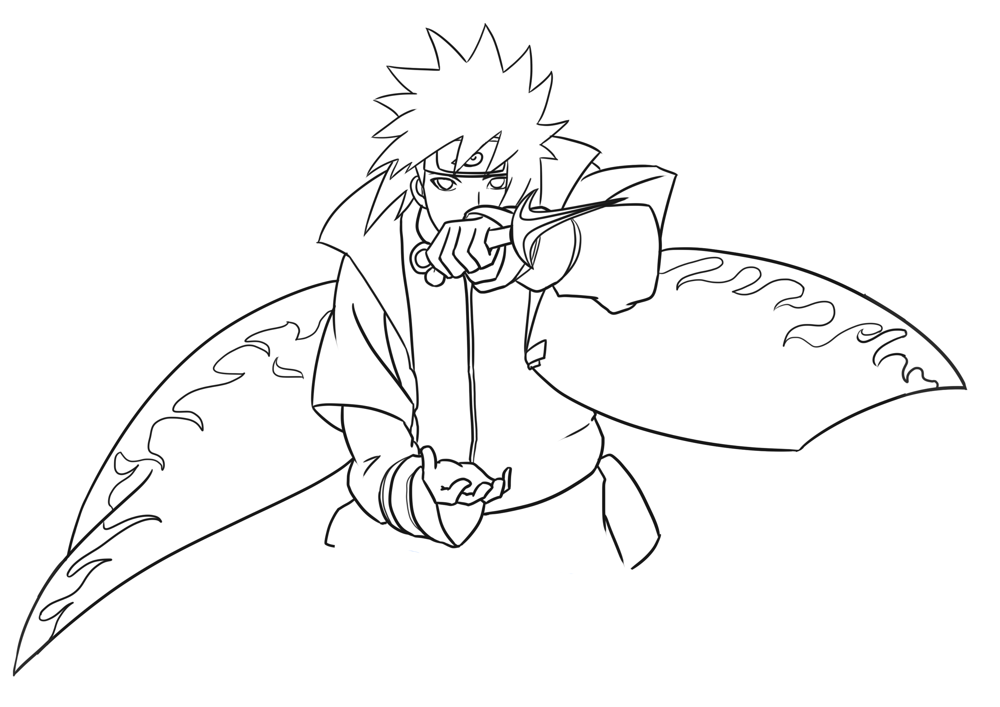
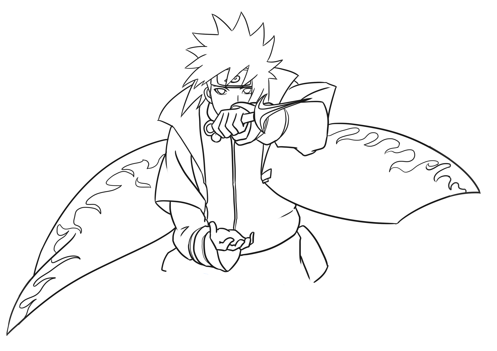

《火影忍者剧场版：博人传》是由日本东宝发行的剧场版动画。 该影片是《火影忍者》的第11部剧场版作品，围绕着漩涡鸣人和宇 智波佐助一代忍者的后辈在经历历练、突破重重困难中成长并且和 父辈一起战胜新的敌人大筒木桃式和大筒木金式的故事。 该片于2016年2月18日在中国大陆上映， 成为继《哆啦A梦：伴我同行》、《名侦探柯南：业火的向日葵》 在中国上映之后，又一部登陆中国内地大荧幕的日本漫画强IP作品； 同时，也是唯一一部在中国内地影院上映的火影系列剧场版。
 
